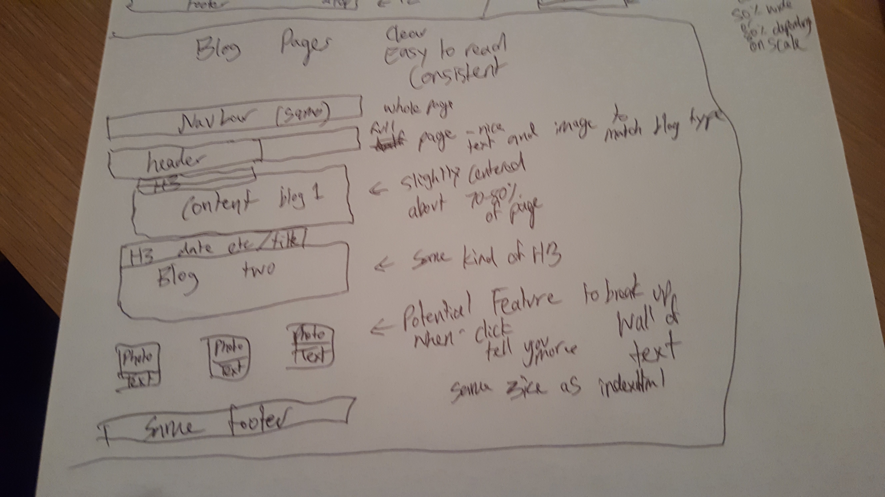
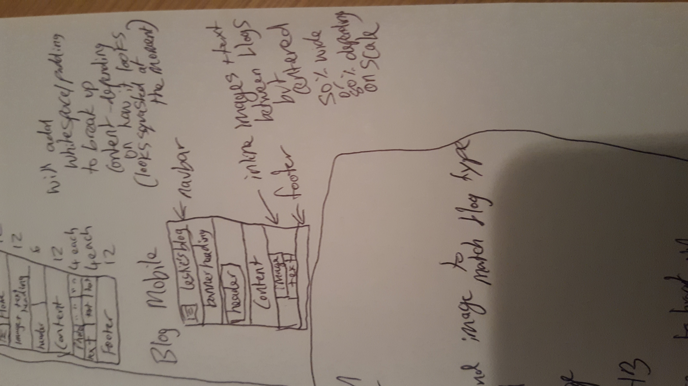
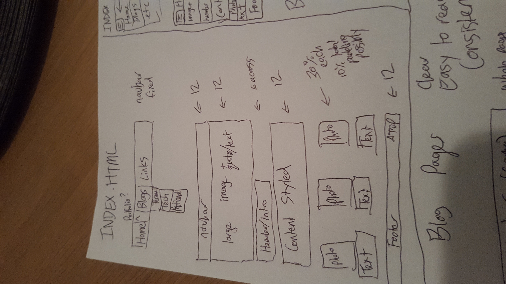
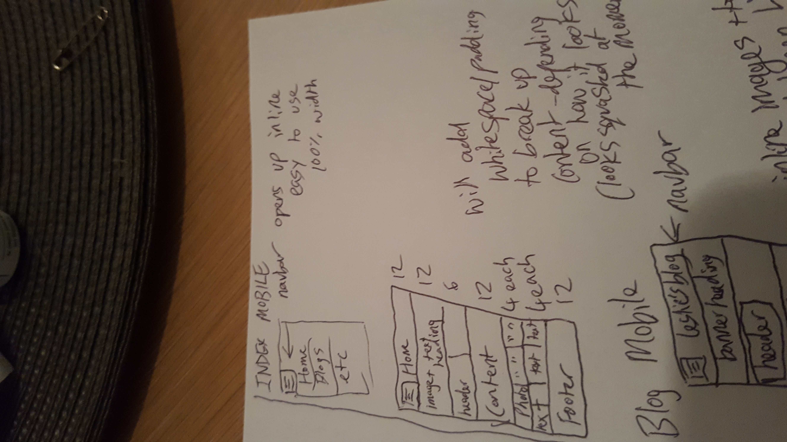
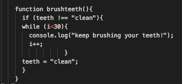

Technical Blogs
Feel free to explore my other blog posts, images, and portfolio.
Technical examples and explanations
- Can you think of an analogy to describe HTML, CSS and the DOM? How would you describe it to your non-technical friend?
- What is meant by boxifying design?
- What is the box model?
If we were to think of HTML, CSS and the DOM in terms of a car. The HTML would be the shell of the car, seats, engine and other parts the car needs to run. The CSS would be the color of the shell, color of the seats and other style elements the car has. The DOM is an action, so when the key is turned, the engine starts. The window going down is the DOM as it's manipulating the window to become smaller.
Here you can see plain html text. Like the car without paint or any features (scrolling windows, started engine).
Now let's paint the car red and the seats blue using CSS.
Lastly, when the user clicks the button below we can watch the car drive away using the DOM.

Boxifying design is when you can design a web page using a series of boxes. At first, you'll see a logo and header, content and some kind of navigation bar or menu. The challenge here, is to reduce all of this content into their own individual (or grouped) boxes. This enables us to create the website using boxes. Each div will equal one box. You can use tools outside of coding to best visualise the webpage as a series of boxes. I'll probably draw my new design down and/or cut it out into boxes using paper and scissors. It's important to understand the boxifying design of a webpage - otherwise it's very difficult to float and align content nicely on a page.
The box model is a concept where every HTML element can be packed into a box. Each box can have its own order, direction, padding, margin and many other styles. Using CSS we will be able to change how the box appears. With the box model you can easily edit/style lots of content at once, or each individual piece of content one by one. Because all smaller boxes are nested within a large box, you could add a page border and background color, but select the smaller boxes and give those a contrasting background color and their own individual borders.
- What is grid based design?
- Whats all the hype about responsive webpages?
- What is semantic structure?
- Any other points you found interesting and want to reflect on.
Grid based design is used to place boxes (or other shapes) within a webpage. You can define the width of the webpage itself and fill the page with content of differing sizes. For example, if you defined the page as being 12 columns wide there could be 4 x 3 column wide boxes or a single 1 x 12 box. There is lots of room to customise here. A grid based approach will help content stay in a particular alignment when the webpage is responsive in nature. The grid isn't static and if you define 12 columns regardless of the page width, 12 columns will appear either side by side or stacked one above another. If we weren't using grid based design principles, it would be a mission plotting out a static area using x and y axis to create content. Furthermore, if the page shrinks you'd lose the content from the current view.
Responsive webpages are very important as a myriad of devices are in existance. We don't have one set aspect ratio and screen resolution anymore. Tablets, cell phones, laptops and ultra wide monitors to name a few. When creating webpages we need to be cautious that our content is visible on mobile and desktop devices. When building my blog from the start, I've been using percentages in order to achieve a responsive web page. This way, if the window is resized, my content within will still be 60% or 20% of the page, and shrink along with the browser window. To take this further, I look forward to integrating a hamburger navbar menu - as the number of blog posts grow my navbar will start to struggle on a mobile device. It worked as of HTML, CSS & DOM Part One - but it'll be interesting to see how many blogs it can take before not looking nice on mobile.
I understand semantic structure as being the correct layout (organisation) for a website. This can be as simple as having the correct order of elements (head, body, etc). Semantic structure also goes deeper. If you're using a stylesheet, you wouldn't expect to see font coloring defined using HTML and font face (or style) set using CSS. In addition, ID's, classes and other attributes should have names that make sense. The top navbar wouldn't be called 'footer' or 'content'. Usually, it would have the name navbar or navigation. Comments can be really helpful in defining structure and personally I use div container a lot as this makes it easy to find where the actual content begins.
I found my paragraph tags failed verification. Generally, you wouldn't have paragraph tags inside a list item element. However, further research shows while it's not semantic (or perfect), the functionality of the page isn't impacted at all. I'll have to clarify with a tutor to see what other options are available. I tried using span tags, but those also didn't pass. I did further research but couldn't find a conclusive answer. Maybe there isn't one.
- What a responsive site is, and why responsiveness is important.
- What mobile first design is, and why it's important.
- What frameworks are, and their pros and cons.
- What a wireframe is and why we use it.
- The aspects of your wireframes you found difficult to implement, and why.
- I wanted to have a background image behind my text, but this was hard to implement because the picture never turned out to be the right size. Even after resizing, it impacted the text making it hard to read. I feel like a lot of time was spent here.
- I found it difficult to use the navbar in skeleton css because it didn't match my humburger mobile nav bar. I really wanted to have the hamburger nav bar so I used the Bootstrap framework as they have really awesome nav bars on mobile.
- Lastly, I tried to code on my desktop computer and use my mac to push the files to GitHub. This bought it's own set of challenges as all the file paths for anchor links and CSS styles, failed to work - leaving me in the dark for a while.
A responsive website is one that changes as you minimise (or shrink) the page. During the downsize, all content should re-order and remain visible. Text and other elements, should not run off the page. Responsiveness is important as users browse the internet from so many devices, all with differing screen resolutions. We need to ensure the website is able to respond appropriately to all resolutions.
Mobile first design is very important as most users out there, now have mobile phones. Browsing from mobile is becoming more and more popular. If a webpage can render on mobile, chances are the experience is OK on desktop. Focusing on mobile first, will ensure the website is responsive to most screen sizes.
Frameworks are pre-built components you can use when building a website. The pros are ease of use, hugely available, simple but powerful websites with minimal coding. The cons can be documentation (lack of it), difficult to understand code (class names cannot be customised) and the decision between frameworks can be difficult.
A wireframe is like an outline for your webpage on both desktop and mobile. We use this so we're not programming blindly. This keeps us on track and we know exactly what we have to build and how to build it. Otherwise, many hours could be lost playing around with code and deciding what and where everything should go.
   
- How does JavaScript compare to HTML and CSS?
- Explain control flow and loops using an example process from everyday life, for example 'waking up' or 'brushing your teeth'.
- Explain the difference between accessing data from arrays and objects.
- Explain what functions are and why they are useful.
Javascript has the ability to create objects and variables, that can be manipulated and committed to memory as desired. On a website, Javascript is often used to provide interactive elements. Using a calculator for example, HTML code is used to create the skeleton of the page and text. CSS is used to color the background and make the page more appealing to the eye. Lastly, Javascript will be brain behind the scenes that is able to compute math and return an answer to the calculator screen.
Control flow is the order of events that are executed in Javascript. Loops are used to cycle through possible events and provide a solution if a particular event is achieved. For example, brushing your teeth. If you have just woken up, brush your teeth. Else if teeth are already clean, eat breakfast. We could even nest a loop within this, saying while teeth are dirty, continue to brush and then call breakfast function when clean. 
Objects can have multiple properties within them. To access data within an object, you can use objectname.dataname to access the information. An example would be an object person, having properties such as age, eye color, height, favourite places and hobbies. Arrays can have multiple dimensons (an array within an array) or just a single layered one. To retrieve data from arrays you can use arr[1] to return the second item in the array. For example, if we have an array with numbers 1-5, arr[3] will return 4 as arrays start at 0. The number index is used to access the array. We can also add additional numbers for multi dimension arrays (arr[3][2]).
Functions are really helpful in Javascript as they allow your main program to appear simple, as it will call multiple functions. The function itself, will contain all of the code and actions within. A function is like a group of statements and variables that will perform a certain task when the function is called. We could have a function for opening a door. We'd only need to call openDoor();. However, within that function there could be hundreds of lines that will unlock the lock, put shoes on, turn the door handle and push the door, later closing the door behind themselves.